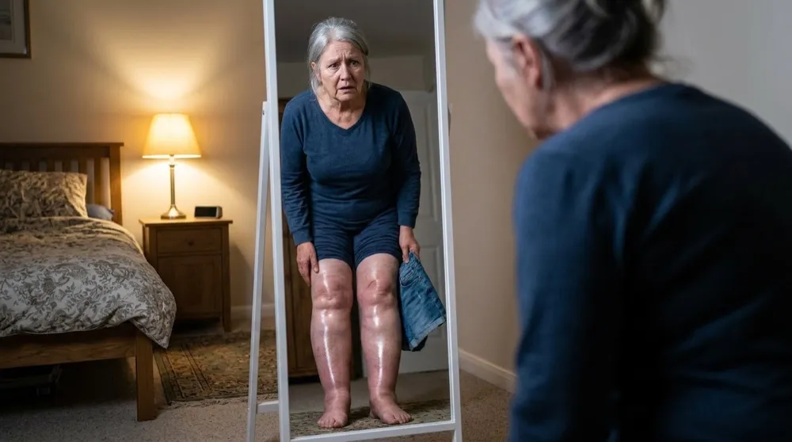
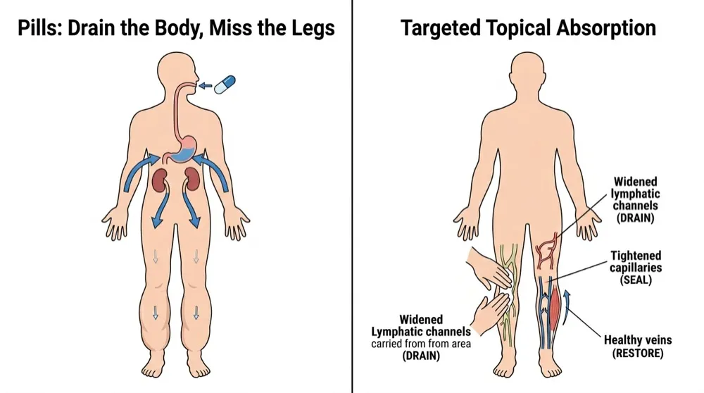
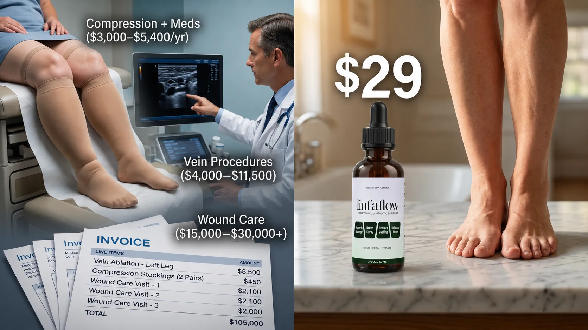
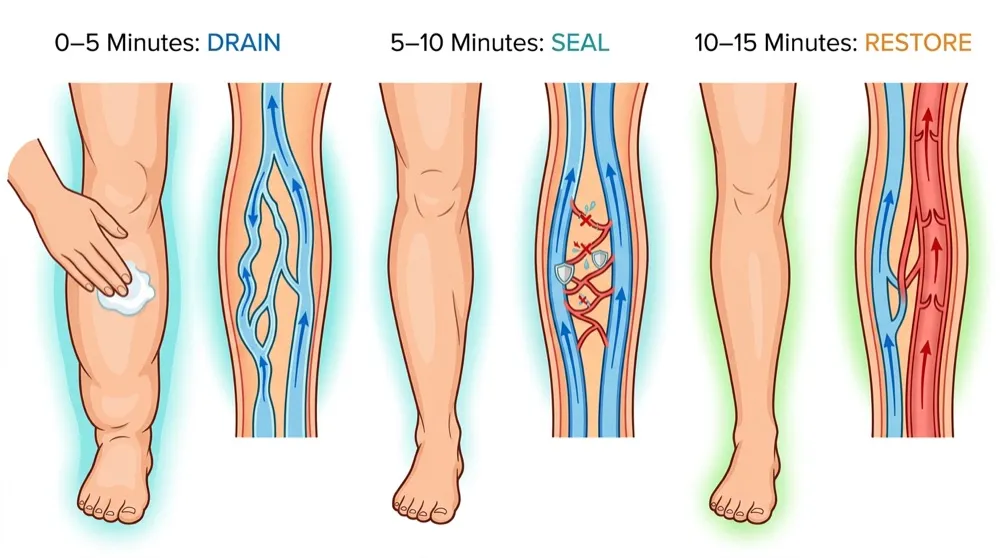

Swollen Feet & Ankles? Rub This Plant on Your Legs Before Bed — Thousands of Women Say the Fluid Drains by Morning
Written by Dr. Andy Salazar

I'm about to piss off every vein specialist, vascular surgeon, and pharmaceutical company in America.
Because what I'm about to share could cost them MILLIONS in lost revenue.
But I don't care anymore.
After watching my patient Ruth write “I DON'T RECOGNIZE MY OWN LEGS ANYMORE” in all caps on her follow-up survey...
After seeing her describe sitting at her daughter's wedding reception... ankles so swollen her shoes had split at the seams... trying to hide her legs under the tablecloth because they looked like they belonged to someone twice her size...
After watching the “experts” shove her into compression stockings she could barely get on, prescribe diuretics that left her dizzy and depleted, and try to sell her a $7,000 vein ablation procedure that her insurance wouldn't cover...
I knew the system had failed her.
So I went rogue and discovered something that changed everything.
And if you're reading this with legs so heavy they feel like concrete by 3 PM, ankles so puffy you can press your thumb in and watch the dent stay for 30 seconds, or feet so swollen you haven't worn real shoes in months...
The next 5 minutes could be the most important of your life.
SUMMER HEAT WARNING: Why Your Legs Feel WORSE Right Now
If your legs have felt heavier, tighter, and more painful than usual lately — it's not in your head. The extreme summer heat sweeping across America is actively making your swelling worse:
Your veins swell wider in the heat — forcing even more fluid to leak into your already-waterlogged legs. That's why your ankles look worse by afternoon than they did a month ago.
Your body hoards extra salt and water — a heat stress response that pumps even more fluid into your legs. Shoes that fit last week suddenly don't.
Your body's natural drainage system slows down — the heat exhausts the very system responsible for clearing the swelling. The fluid has nowhere to go.
If your swelling has gotten worse this summer — the heat is why. And it will keep getting worse until you address what's actually happening inside your legs. Keep reading.
My name is Dr. Andy Salazar. I've been a licensed pain specialist for 12 years.
I serve as the Medical Director of Master Health Research, an independent organization dedicated to finding natural cures the pharmaceutical industry ignores.
And I'm about to expose the dirty secret that keeps millions of Americans trapped with heavy, swollen, aching legs... while the medical industry laughs all the way to the bank.
But first, let me tell you about the evening that changed everything...
THE NIGHT EVERYTHING CHANGED…
I was in my office late on a Thursday night. Going through patient surveys from the week.
Most of them were pretty standard. “The compression socks helped a little.” “Still managing the swelling.”
Then I got to Ruth's. And my stomach dropped.
She'd written in all caps: “I DON'T RECOGNIZE MY OWN LEGS ANYMORE.”
Not “the swelling is bad.” Not “I'm uncomfortable.”
“I DON'T RECOGNIZE MY OWN LEGS ANYMORE.”
She described coming home from her daughter's wedding. Sitting on the edge of the bathtub. Looking down at her legs... and crying.
Not because they hurt. Because they didn't look like hers.
Her ankles had vanished. Her calves were stretched tight and shiny. The skin on her shins was discolored... a mottled reddish-brown she'd never seen before. She could press her thumb into the top of her foot and the indent would stay for almost a minute.
She wrote that she'd stopped wearing skirts three years ago.
Stopped going to the community pool.
Stopped accepting dinner invitations because restaurants meant sitting for two hours, and by the time she stood up, her legs would be so swollen and stiff she could barely walk to the car.
She was 66 years old. And she felt like she was watching her body betray her in slow motion.
And here's what killed me...
Ruth had done EVERYTHING her doctors told her to do. Compression stockings. Elevation. Diuretics. Salt restriction. Two different vein specialists.
All of it. Nothing worked for more than a few hours.
Her primary care doctor? Put her on furosemide. A diuretic that made her run to the bathroom 14 times a day. Left her lightheaded and exhausted. Her legs? Still swollen by noon.
Her vein specialist? Told her the valves in her leg veins were “failing” and recommended a $7,000 vein ablation procedure. Her insurance denied it. Said it was “cosmetic.”
Cosmetic.
As if legs so swollen she couldn't tie her own shoes were a beauty concern.
And the compression stockings? She could barely wrestle them on in the morning. By afternoon, the elastic had cut into her swollen calves so deeply it left angry red grooves. She described peeling them off at night as “the only relief I get... and even that only lasts until morning.”
I sat there staring at that survey for twenty minutes. And something inside me snapped.
I wasn't gonna let this keep happening. Not to Ruth. Not to anyone else.

THE MIND BLOWING DISCOVERY
For the next 3 months, I lived like a man possessed.
I devoured every research paper on poor leg circulation and lower leg swelling I could find. Called vascular researchers at Johns Hopkins, the Cleveland Clinic, and the Mayo Clinic. Flew to medical conferences in Germany and Switzerland. Spent $11,000 of my own money on medical journals, insider reports, and access to restricted research databases.
My wife thought I was losing my mind. Maybe I was. But I didn't care.
And what I found... genuinely made me want to punch a hole through my computer screen.
The entire vein treatment industry is built on a lie.
A $3 billion lie that keeps you swollen, miserable, and reaching for your wallet.
Here's what they don't want you to know:
Compression socks, elevation, and diuretics don't fix leg swelling. They manage it. Temporarily. Like bailing water out of a boat with a hole in the bottom.
Every treatment your doctor has given you addresses the SYMPTOM... the fluid in your legs... without fixing the CAUSE... the reason the fluid keeps leaking there in the first place.
Think about that for a second.
Compression socks squeeze the fluid up. But the second you take them off? The fluid pours right back.
Elevation uses gravity to drain your legs. But the moment you stand up? The flooding starts again.
Diuretics force your kidneys to dump water. But they don't fix a single leaking valve or seal a single leaking capillary. And here's the really cruel part... diuretics actually deplete your magnesium, which your veins desperately need to function properly. The pills meant to help your legs are quietly making the underlying problem WORSE.
It's like mopping the floor while the pipe is still burst.
So what's actually causing the flood?
Your legs are drowning. And I don't mean that metaphorically.
THE REAL ROOT CAUSE OF SWOLLEN LEGS
Picture the veins in your legs like a series of one-way doors stacked on top of each other.
When you're young, those doors snap shut cleanly after each heartbeat. Blood gets pushed up toward your heart, the doors close behind it, and gravity can't pull it back down.
But after years of standing, sitting, and living... those doors start to warp. They don't close all the way anymore. Blood starts leaking backward. Pooling in your lower legs. Building up pressure like water behind a failing dam.
This is called poor leg circulation. And it affects over 50 million Americans.
But here's the part nobody talks about...
The pooling blood isn't just sitting there. It's ATTACKING your legs from the inside.
The elevated pressure forces fluid out of your capillaries and into the surrounding tissue. Think of it like a garden hose with too much pressure... the water starts spraying out of every tiny crack and weakness in the line.
That's what's happening inside your legs right now. Fluid is being forced through the walls of your smallest blood vessels and flooding the tissue around them.
And it gets worse.
Your body's inflammatory response kicks in. Mast cells start dumping histamine. White blood cells start chewing on your vessel walls. Inflammatory molecules called leukotrienes start punching MORE holes in your capillaries... making them leak even faster.
Meanwhile, your lymphatic system... the drainage network that's supposed to carry all this excess fluid away... gets overwhelmed and compressed by the swelling itself.
So the drains are clogged. The faucet is still running. And the pipes have holes in them.
This is “Vascular Drowning Syndrome.”
And it explains EVERYTHING.
Why your legs are worst by evening... gravity has been pulling fluid down all day while your damaged valves let it pool.
Why elevation only helps temporarily... you're draining the flood, but the holes in the pipes are still there. The moment you stand up, the cycle starts again.
Why compression socks feel like a temporary fix... they're squeezing from outside, but the capillaries are still leaking from inside.
Why the swelling keeps getting worse over time... the inflammation damages more valves and punches more holes, which causes more swelling, which causes more inflammation. A vicious cycle that feeds itself.
Now you understand what's happening inside your legs. Here's why extreme heat makes every single part of it worse:
Vasodilation overload — Heat forces your blood vessels to expand even wider, dramatically increasing pressure on capillary walls that are already full of holes. More pressure = more fluid flooding your tissues.
Histamine spike — High temperatures activate mast cells to dump even MORE histamine, punching new holes in your capillaries faster than your body can repair them.
Magnesium depletion through sweat — Sweating drains the magnesium your veins desperately need to function. Less magnesium = weaker vein walls = more pooling, more leaking.
Lymphatic slowdown — Heat thickens your lymph fluid, making it even harder for your already-overwhelmed drainage system to clear the swelling. The clogged drain gets MORE clogged.
Every mechanism driving Vascular Drowning Syndrome is AMPLIFIED during extreme heat. This isn't going to get better on its own — it's getting worse by the day.
Chronic venous disease afflicts more than 190 million Americans. That's 1.5 times MORE people than all cardiovascular diseases combined.
And the medical industry treats it like an afterthought.
You know why? Because swollen legs aren't "dramatic" enough for emergency rooms. They don't get you on the surgery schedule fast enough to bill insurance $50,000.
Until the skin on your legs starts breaking down. Until the discoloration turns permanent. Until the first ulcer opens up... and suddenly you're looking at $55 to $70 billion in annual medical costs that the system is more than happy to collect.
They don't want to fix your swelling early. Because your swelling getting WORSE is what fills their vein clinics, wound care centers, and surgical suites.
It's genius, really. If you're a sociopath who sees human suffering as a revenue stream.

THE 15-MINUTE MIRACLE HIDING IN PLAIN SIGHT
Remember Ruth? The woman who wrote “I DON'T RECOGNIZE MY OWN LEGS ANYMORE” on that survey?
Three weeks after I applied these findings to her treatment, she wore a skirt to church for the first time in three years.
No compression stockings. No diuretics. No $7,000 vein procedure.
Truly life-changing.
We used a new “Topical Drain and Seal” method. By applying specific compounds directly to the swollen legs, we bypassed the stomach completely and addressed all three failure points simultaneously... right where the damage was happening.
To fix chronic leg swelling, you need to do THREE things at the same time:
1) Drain
DRAIN the excess fluid by opening up the lymphatic channels that have been overwhelmed and compressed. Your lymphatic system is the drainage network that carries excess fluid away from your tissues. In chronic swelling, it's backed up like a clogged pipe. You need to physically widen those drainage channels and get the fluid moving again.
2) Seal
SEAL the leaking capillaries that keep flooding your tissues. This is the step EVERYONE misses. Your tiniest blood vessels have holes in them. Inflammatory molecules are punching through the walls and fluid is pouring out. Until you seal those leaks, draining the fluid is pointless... it'll just flood right back.
3) Restore
RESTORE proper vein and muscle pump function so blood stops pooling backward in the first place. Your calf muscles are supposed to squeeze blood back up toward your heart with every step. But magnesium deficiency, inflammation, and damaged valves have crippled that pumping system. You need to get it working again.
Miss even ONE of these steps, and you're wasting your time.
That's why compression socks don't work long-term. (They squeeze from outside but don't seal the leaks inside.)
That's why diuretics don't work. (They drain fluid through your kidneys while depleting the magnesium your veins desperately need.)
That's why elevation alone doesn't work. (Gravity drains the flood temporarily but the pipes are still leaking.)
That's why vein procedures often disappoint. (They close off damaged veins but don't address the inflammatory capillary leaking that drives the swelling.)
You need all three. At the same time. Working together.
A Triple-Action Drain, Seal, and Restore. And that's exactly what this formula delivers.
THIS BREAKTHROUGH IS PISSING OFF AN ENTIRE INDUSTRY
After Helen's recovery, word spread fast.
My colleague Sharon... an ICU nurse I'd worked with for years... cornered me in the hospital break room one evening.
“Whatever you did for Ruth. I need it. NOW.”
Sharon was 54. Tough as nails. The kind of person who never complained about anything.
But twelve-hour shifts on her feet had destroyed her legs. By hour eight, her ankles would be so swollen her compression socks were cutting off circulation instead of helping it. She'd started wearing scrub pants two sizes too big just to hide the swelling from her patients.
The worst part? She was a nurse. She KNEW what poor leg circulation could lead to... the skin changes, the discoloration, the ulcers. She was watching it happen to her own legs and felt completely powerless.
She'd tried everything. Three different brands of medical-grade compression stockings. Elevation on her breaks. Diuretics that made her dehydrated during 12-hour shifts... dangerous when you're responsible for critically ill patients. Nothing stopped the swelling from coming back.
I gave her a sample of the formula. Told her to rub it into her calves and ankles after her shift.
Fifteen minutes later, she texted me. “Andy... I can see my ankle bones. I haven't seen my ankle bones after a shift in two years.”
The next morning, she woke up and her legs looked normal. Not “slightly less swollen.” Normal. The skin wasn't shiny and stretched. The dents from her socks were gone. She could see the actual shape of her calves again.
She called me from her kitchen, and I could hear her voice cracking.
Not from pain. From relief.
Within 72 hours, I had people tracking me down. Teachers whose legs ached so badly by 3 PM they couldn't stand for their last class...
Retirees who hadn't worn sandals in years because they were ashamed of how their feet looked...
Office workers whose legs were so heavy by quitting time they dreaded the walk to their car...
Every. Single. One. Got. Better.
Not “learned to manage it” better. Not “found ways to cope” better.
ACTUALLY BETTER.
That's when the threats started.
WHEN YOU THREATEN THE $70 BILLION SWOLLEN-LEG INDUSTRY, THEY COME FOR YOU
First, it was "friendly" warnings.
A vein specialist I'd known for over a decade pulled me aside at a conference: "Andy, what you're doing is making us look bad. Patients are canceling their ablation consultations. You should stop before someone gets hurt."
Translation: Stop before WE lose money.
Then came the cease and desist letters. Three law firms. All representing "concerned medical professionals." Claiming I was "practicing outside my scope."
The final straw? A compression garment rep I'd worked with for 8 years... the guy who used to take me to lunch every month to push his medical-grade stockings... stopped returning my calls.
“Sorry Andy, corporate told me to focus on other accounts. Nothing personal.”
They wanted me gone because I'd created something that could make their entire business model obsolete.
A simple topical cream that:
Fixed the ROOT CAUSE of leg swelling (not just squeezed it from outside)
Worked in 15 minutes (not hours of uncomfortable compression)
Cost less than a single insurance copay
Let people heal themselves at home (not in some expensive vein clinic)
But here's what those pharmaceutical vultures didn't count on...
I'd already partnered with a small team of biomedical engineers who believed in what we were doing. People who'd watched their own family members suffer through the same broken system.
And together, we'd turned my clinical discovery into something anyone could access.
INTRODUCING THE SUPPORT VEIN CLINICS DON'T WANT YOU TO KNOW ABOUT
It's called Linfaflow®.
And it is the only morning ritual built to deliver all four requirements for lasting relief from puffiness and swelling:
The drainage activator
Cleavers Aerial Parts
Cleavers does something no compression sock and no massage table can do... it works from the inside, on the tiny drainage vessels sitting right in your tissue, where the fluid is actually parked. Herbalists have used it for one specific purpose for centuries: getting stagnant fluid moving. Not by forcing your kidneys to dump water like a diuretic. By supporting the drain itself. We use the aerial parts... the top growth, where the actives concentrate.
The pathway openers
Stillingia Root & Red Clover
Moving fluid is pointless if it has nowhere to go. Stillingia root was used in traditional American practice for exactly this... supporting the deep drainage routes that sit far below anything a hand or a brush can reach. That's the step every massage misses, and it's why the relief never survives the night. Meanwhile, red clover blossom, rich in plant isoflavones studied for circulation and vascular tone, works the layer right under the skin of your face... the surface layer that decides what you see in the mirror at 6 a.m. Deep drainage alone will never touch it.
The flow restorer
Prickly Ash Bark
Your drain has no motor. It runs on your calf, your diaphragm, and your movement... which means on the days you sit for nine hours, it barely runs at all. Prickly ash bark has been used for generations as a circulatory stimulant, the herb reached for when flow is slow and stagnant. It supports the movement your calf pump can't provide from a desk chair. It's also where the fog lifting comes from.
That's FOUR separate points of the same system worked at once. Not from one angle. From every angle simultaneously. In one dropper.
You literally just hold it under your tongue for thirty seconds. And let the science do the work.
No compression socks cutting into your calves. No water pills turning your morning into a bathroom schedule. No appointments.
Just your drain finally getting what it's been desperately needing:
Drain. Seal. Restore.

HERE IS EXACTLY HOW IT DEFEATS LEG SWELLING IN 15 MINUTES
When you take Linfaflow® under your tongue before your coffee... Here is what happens inside your body:
Days 1-4: The Move Phase
The cleavers goes to work on the fluid that's been parked in your tissue... some of it for months, some of it for years. And here's the part that surprises most women: the first thing that changes isn't your face. It's your afternoon. The heaviness that usually shows up around 3 p.m. arrives later, or lighter, or one day it just doesn't announce itself the way it used to. Bloating eases. Some women notice their ring going on easier before they notice anything at all in the mirror. Don't watch your face this week. Watch what happens at 3 p.m.
Days 5-9: The Open & Clear Phase
This is where the real breakthrough happens. Stillingia opens the deeper pathways, so the fluid cleavers moved actually leaves your body instead of settling somewhere new... which is exactly what a six-hour massage could never do. At the same time, red clover works the surface layer under the skin of your face, a completely separate floor of the same building. Two levels at once. The recovery hour starts getting shorter... sixty minutes becomes thirty, then fifteen. The sock marks fade faster, then stop pressing in as deeply at all. And your face starts looking like itself at 7 a.m. instead of at 10.
Days 10-16: The Power Phase
The prickly ash holds the line. Because the real test was never a good week... it was whether this survives a Tuesday you spend entirely in a chair. Your shoes fit the same at 6 p.m. as they did at 8 a.m. Your skin looks more even, less swollen, more rested. The 11 p.m. ankle ring is just... not there. And somewhere in here you stop tracking it, stop doing the math on your own face, stop picking shoes based on the hour.
After 16 days? You look in the mirror and see a face you recognize again.
Not "a little less puffy" like after a night with your feet up. Not "squeezed into shape" like compression socks.
In the last 18 months, over 1,000 people have used Linfaflow® for leg swelling, ankle swelling, and poor leg circulation.
The results?
Over 90% report significant reduction in swelling within the first week
Most reduced or completely eliminated their diuretic medications
Many canceled the vein procedures their doctor had recommended
But my favorite stat? Our refund rate is 0.4%. That's FOUR people per thousand.
Don't take my word for it. Here's what real people are saying:
R
Ruth, 66
★★★★★
”I'd given up on my legs. Three years of compression stockings, diuretics, and elevation... and every single evening I'd look down and see the same swollen, discolored stumps. I'd stopped wearing anything that showed my legs. Stopped going to the pool with my grandkids. When my daughter got married, I sat at the table all night because I was too embarrassed to get on the dance floor. Three weeks after starting Linfaflow, I looked down after a full day on my feet and saw my ACTUAL ANKLES. I could see the bones. The skin wasn't shiny and stretched. I sat on my bathroom floor and cried. My doctor told me the improvement was 'remarkable' and asked what I'd changed. When I told him it was a topical cream, he looked at me like I'd lost my mind.”
F
Frank, 71
★★★★★
“I'm a retired carpenter. Spent 40 years on my feet and my veins paid the price. By the time I retired, my legs were so swollen by evening I couldn't get my shoes off without my wife's help. The skin on my shins was turning brown. My doctor said I was heading toward ulcers and wanted me in medical-grade compression stockings 14 hours a day. You ever tried pulling compression stockings over legs the size of fence posts? It took me 20 minutes every morning. I was ready to give up. My son ordered this for me and I figured what the hell. After about two weeks, the swelling was noticeably down. After a month, I could put my shoes on and take them off by myself. My wife says my legs look better than they have in 10 years. The brown patches are even starting to fade.”
B
Beverly, 63
★★★★★
”The diuretics were the worst part. I was running to the bathroom every 45 minutes. Couldn't go on car trips. Couldn't sit through a movie. Couldn't sleep through the night without getting up three times. And my legs were STILL swollen. My doctor kept increasing the dose. I was exhausted, dehydrated, and dizzy... and my ankles still looked like softballs. A friend at church told me about Linfaflow and I was skeptical. But within the first week, I noticed the heaviness in my legs was less by evening. By week three, I asked my doctor about reducing the diuretics. He was hesitant, but when he saw my legs, he agreed. I'm on half the dose now and my swelling is better than it was on the full dose. I can sleep through the night. I can sit through my grandson's baseball games. I feel like a human being again.”
THE PRICE THAT IS CAUSING MEDICAL INDUSTRY PANIC
Let me show you what treating swollen legs REALLY costs in America:
The “Compression + Medication” Route:
Medical-grade compression stockings: $80–150 per pair (replaced every 3–6 months)
Monthly doctor visits: $150–300
Diuretic prescriptions (monthly): $30–150
Annual total: $3,000–$5,400 (Plus the indignity of wrestling stockings over swollen legs every single morning.)
The “Vein Procedure” Route:
Initial vein mapping and consultation: $500
Duplex ultrasound: $500–1,000
Vein ablation or sclerotherapy: $3,000–$10,000 per leg
Total: $4,000–$11,500 (For a procedure that doesn't even address the inflammatory capillary leaking driving your swelling. And many insurers deny coverage, calling it "cosmetic.")
The “Wound Care” Route (Where This Is All Heading):
Venous ulcer treatment: $15,000–$30,000+ per episode
Weekly wound care visits for months
Specialized dressings and antibiotics
Total: Your savings... your mobility... your dignity.
The medical industry LOVES that progression.
You know why? Because every stage costs more than the last. Swollen legs lead to skin changes. Skin changes lead to ulcers. Ulcers lead to wound care centers. And wound care is a $70 billion industry that only exists because nobody bothered to fix the swelling early.
It's a goldmine built on human suffering.
But here's what really pisses them off...
Linfaflow® should cost $3,000 per jar. That's what similar medical-grade topical formulations sell for in specialty vein clinics. Hell, that's what the prototype cost me to develop.
But I didn't create this to get rich. I created it because I read Ruth's desperate survey response. Because Sharon was hiding her legs under oversized scrubs. Because Frank's wife was pulling his shoes off every night.
So here's the deal: The regular price is $89 per jar. Already 95% less than ONE MONTH of typical treatment.
But that's not what you'll pay today.
THE 70% OFF “MIDDLE FINGER” TO THE MEDICAL ESTABLISHMENT
Remember those cease and desist letters I mentioned? The threats? The blacklisting?
Well, I just got word that a major medical device company is trying to patent-block our formula.
They can't copy it (we have iron-clad patents). They can't buy me out (I told them to pound sand). So now they're trying to bury us in legal fees and regulatory red tape.
My response?
I'm putting our entire inventory on sale at 70% OFF.
That's right. 70% OFF.
Less than ONE vein clinic copay. Less than your monthly diuretic prescription. Less than those compression stockings collecting dust in your drawer.
For the ONLY cream that actually fixes the root cause of chronic leg swelling.
Why would I do this? Because every person who gets relief is living proof the system failed them. Because I want thousands of success stories flooding the internet before these medical industry vultures can shut us down.
IMPORTANT: We are NO LONGER selling on Amazon. If you see a product that looks like ours on Amazon, DO NOT BUY IT. You won't find our original product there. The only place we sell it is through our official Master Health Research website.
This 70% discount won't last forever. Not because I'm playing marketing games.
But because Linfaflow® relies on a high-grade mineral complex that requires a 6-week fermentation process.
We cannot just "make more" overnight. We've sold out 11 times in the past.
Also - and this is important - we only have 2,184 units left at this price. Our lab can only produce 500 per week.
If you're reading this right now, units are still available. But I cannot promise they'll last through the weekend.
And here's the thing... Every minute you wait is another minute you're:
Feeding the vein clinics and vascular surgeons who profit from your swelling getting worse
Enriching the pharmaceutical companies selling diuretics that deplete your magnesium
Living in unnecessary discomfort and embarrassment
Approaching skin breakdown and ulcers that turn a $15,000 surgical problem...
While the solution is sitting right here... for less than a night out at dinner.
THIS 70% DISCOUNT EXPIRES IN 72 HOURS. After that, the price goes back to $89. And units are selling out FAST.
90Day
MY PERSONAL 90-DAY “NORMAL LEGS OR IT'S FREE” GUARANTEE
Look, I get it. You've been burned before. Spent money on "miracle cures" that turned out to be expensive garbage.
So here is my promise:
Try Linfaflow® for 90 days (2 Full Months). Use it every single day. Twice a day if you want. Feel the heaviness lift. Feel the swelling shrink. Feel your confidence come back.
And if you don't look down at your legs one evening and think... “Holy crap, I can see my ankles again”...
I'll refund every penny.
No forms to fill out. No “store credit” nonsense. No questions asked. Just email support@linfaflow.com and say "It didn't work." We'll send a prepaid return label. Your refund hits within 48 hours.
Why am I so confident? Because our refund rate is 0.4%. That's FOUR people per thousand. And two of those were because their dog knocked the JAR off the counter.
The cream works. Period.
And no, this isn't the type of guarantee every other company throws around nowadays. This is no gimmick.
Want proof? Try emailing or calling our customer service.
You can literally reach us 24/7.
Simply call our support team at +1 (888) 811-1186 or email them at support@linfaflow.com.
We respond to every single email within minutes.
We answer every single phone call...
It may sound old-fashioned but our customers are our absolute #1 priority. Period.
THE CHOICE THAT WILL DEFINE YOUR NEXT DECADE
Six months ago, Ruth couldn't look at her own legs without crying.
She'd done everything right. Compression stockings. Diuretics. Two vein specialists. $4,000 in treatments that worked for a few hours... then the flood came back.
Today? She just sent me a photo from the community pool. Legs out. Grandkids climbing on her lap. No stockings. No cover-up. Just... her legs. The ones she thought she'd lost forever.
The only thing that changed? She stopped draining the flood and started sealing the leak.
That's what Linfaflow does. And that's the same choice sitting in front of you right now.
You can keep wrestling compression stockings over swollen calves every morning. Keep swallowing pills that drain your magnesium along with your energy.
Keep hiding under long pants in July while the valves get weaker and the capillaries leak faster... month by month... edging closer to the skin breakdown.
Or you can do what Ruth did. What Frank did. What Beverly did. What over 1,000 people have done when they finally got sick of bailing water out of a boat with a hole in the bottom.
Seal the damn hole.
Less than one copay at the vein clinic that wasn't fixing anything anyway.
90 days to decide if it works. (It will. Our refund rate is 0.4%.)
Your legs have been drowning long enough.
HERE IS EXACTLY WHAT TO DO NEXT
Click the button below that says “APPLY DISCOUNT & CHECK AVAILABILITY”
Choose your package (Pro tip: Get at least 3 jars. You'll want backups when this works. Plus you'll save more.)
Fill out your shipping info (We ship same-day if you order before 3pm EST)
Wait for your package to arrive (Usually 3-5 days)
Use it the moment it shows up
Email us your success story in a week (Seriously. Our team loves hearing these: support@linfaflow.com)
But whatever you do... Don't close this page thinking "I'll order later."
Later doesn't exist when your legs are getting worse. Later is another evening hiding behind long pants. Later is another month closer to skin breakdown. Later is the discount expiring and inventory running out.
Your legs have waited long enough. Click below and let's end this nightmare.
LIMITED TIME READER-ONLY SPECIAL: Ordering now makes you eligible for 70% OFF Linfaflow®. Only available here. Limited to first few 1,000 customers only.
This offer expires soon.
With hope,
Dr. Andy Salazar
Master Health Research
P.S. Ruth just sent me a photo from the community pool. She's in a swimsuit. Sitting by the water with her grandkids. Legs out. No compression stockings. No cover-up. Just... normal legs. And a smile I can feel through the screen. That could be you in a few weeks. But only if you act now.
P.P.S. Chronic venous disease affects more than 190 million Americans... that's 1.5 times more people than all cardiovascular diseases combined. Yet most doctors treat swollen legs as an afterthought. This formula addresses what's ACTUALLY happening inside your veins and capillaries. Real science. Real results.
P.P.P.S. Seriously, we're down to 2,184 units. By the time you finish reading this, we could be under 2,000. When I refresh and see it below 1,000, I'm pulling this page. Don't say I didn't warn you.